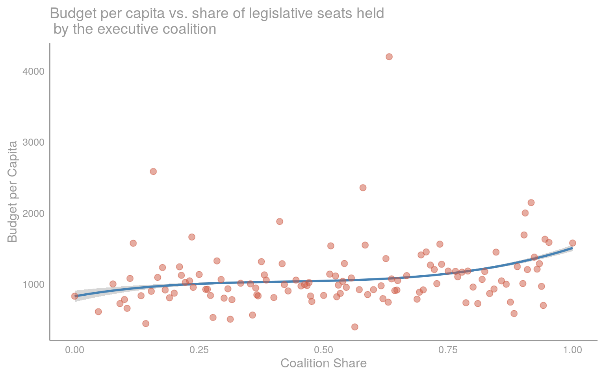
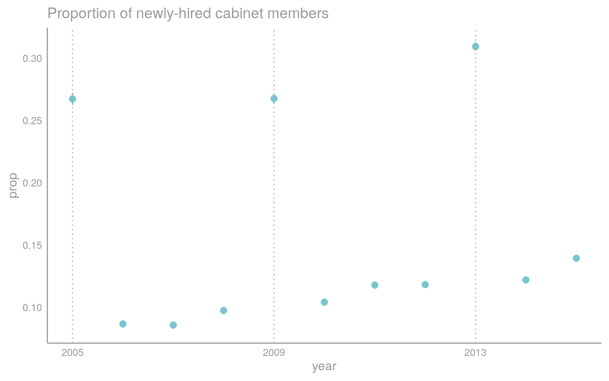
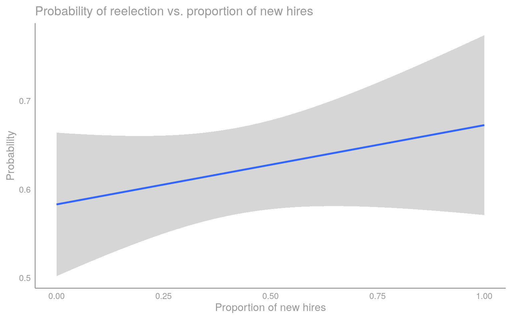
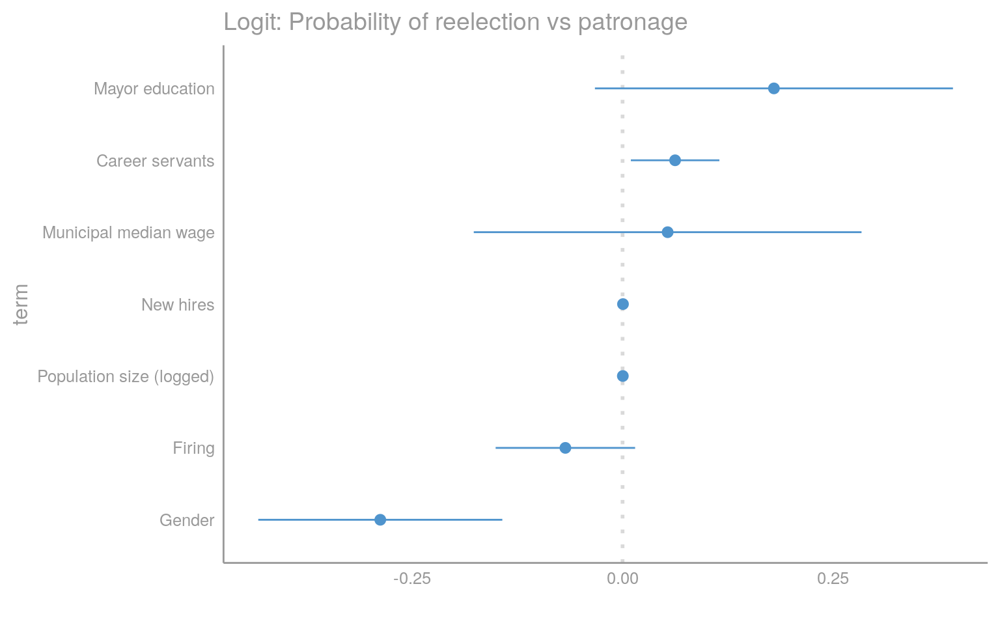
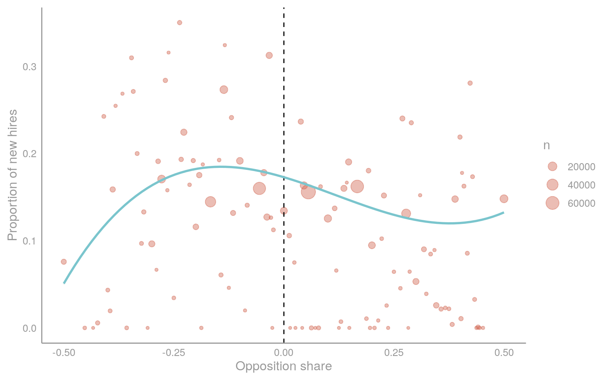
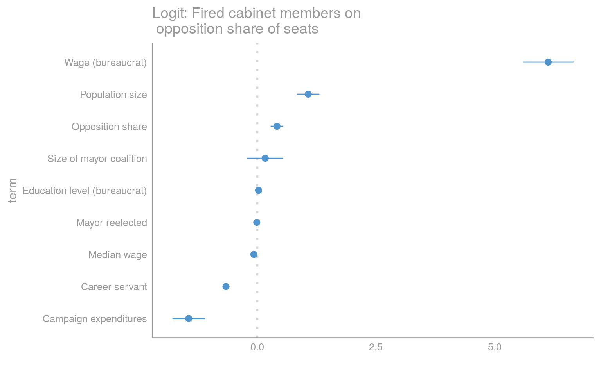
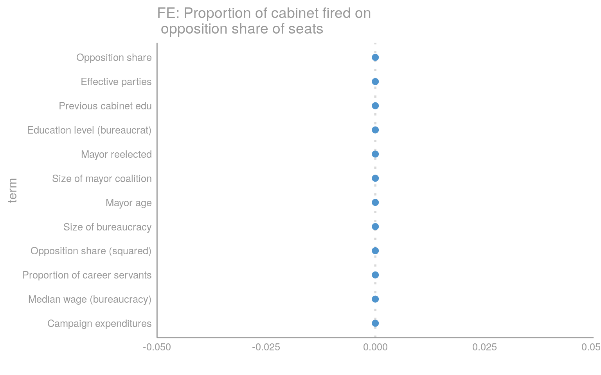
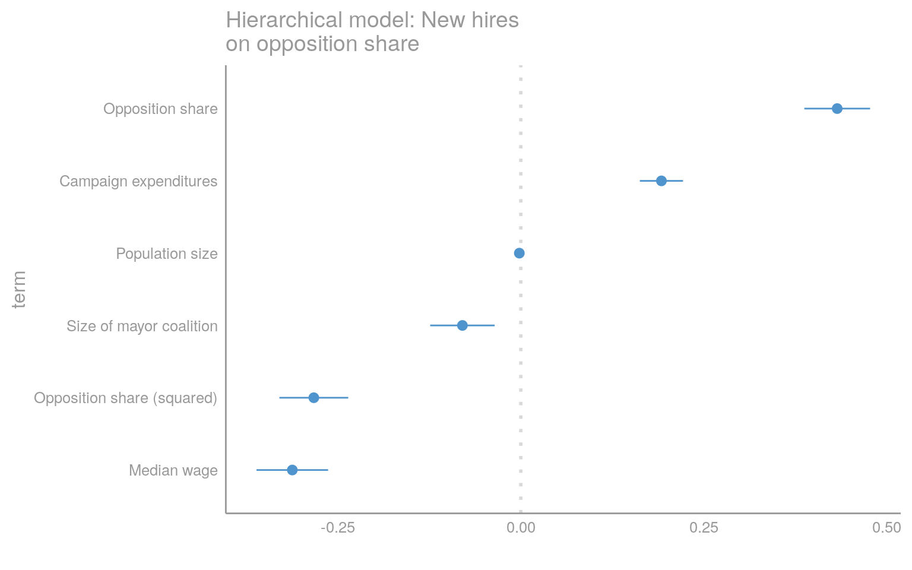

Chapter 6 Coalitional dynamics
6.1 Coalitional presidentialism
In Brazil, the executive-legislative bargain has been the object of recurrent research. Since the seminal work of Abranche (1988), scholars have emphasized that the relationship between the president and the national legislature (Congresso Nacional) was characterized by coalitional presidentialism.89 The term referred to the bargaining process between president and legislators, where governing presidents resorted to the concession of pork and cabinet positions in order to secure support by the legislature for their policy agenda. While there remains debate as to whether presidential coalitionism induces partisan or personalistic voting, there is little controversy that the exchange of administrative posts for legislative votes is widespread in federal politics.90
The need for coalitions stems principally from Brazil being characterized by a multipartisan, fragmented system.91 In the absence of a clear majority in the legislature and strong ideological commitments by parties, presidents have to build coalitions through the concession of valuable positions in their cabinet. Positions such as the Ministry of Transportation are particularly valuable since parties controlling it can target infrastructure investments to party members at the state or municipal level. These concessions, however, are costly. Policies over which the president seeks to retain control, such as the Ministry of Finance are generally protected from the political bargains embedded in presidential coalitionism.92
This regularity raises the question of what factors help explain variation in the degree of autonomy and politicization of federal bureaucracies and administrative structures under political oversight more generally.93 Scholars have pointed out ideological differences between president and coalition party members, as well as the relative importance of a ministry portfolio to the president as relevant factors in explaining cabinet allocation.94 However, analysis based on presidential and congressional data faces sample size limitations that make it difficult to assess which presidential characteristics - and congressional ones - explain variation in the degree of instability in bureaucratic structures.
In order to explore these causal mechanisms further, I analyze local legislatures, mayors and bureaucratic positions in municipal Brazil. An analogous political structure, with a separation of power between the mayor and a local legislature occupied by a large number of parties, suggests that a similar coalitional dynamic could be at play. Moreover, in the absence of regulations preventing local politicians from allocating key cabinet positions to coopt legislators, there is good reason to suspect that a similar executive-legislative bargain could be shaping the allocation of public sector jobs in municipalities across Brazil. In the next section, I provide an outline of local government structures and the variation in a key explanatory variable: executive control over legislatures.
6.2 The case: Brazilian municipalities and mayoral coalitionism
How applicable are these analytical building-blocks to the local level? Each and every municipality in Brazil institutionalizes separation of powers. Mayors do not govern alone: with every municipal election, an executive leader and her legislative counterparts take office. Recent studies on local governments in Brazil often overlook this institutional feature, disregarding the fact that municipalities comprise both an executive and legislative branch.95 While mayors have exclusive prerogative over the appointment of local employees and establishing a policy agenda, appointments respond to the need to ensure legislative support.96
The municipal legislative chamber plays a central role in municipalities. It is responsible for oversight and vetoing the executive budget, as well as approving and ammending municipal laws. This grants the legislative chamber and its city councillors significant power over the mayor’s ability to implement their policy agenda. In order to garner legislative support, it is common for mayors to concede key cabinet positions to city councillors.97 A set of scholars have started to analyze this tradeoff between legislative support and cabinet allocation at the federal level, but to the best of my knowledge the municipal level is yet to be explored.98
While conducting fieldwork research in Brazil, I was struck by the recurrent accounts of the important role played by local city councillors (vereadores) in shaping the bureaucracy. Secretaries of education argue that deputees often demanded to nominate their own loyalists to prominent cabinet positions, with the tacit but careful approval of the mayor.99 The degree to which mayors acquiesced to these demands depends on their bargaining power: how many seats their coalition was able to secure in the local chamber. When the executive coalition held a comfortable margin, the need to appease coalition members through appointments was less pressing.100 Conversely, budgetary resources can be withheld when mayors are in a minority governemnt.

While most mayors tend to hold a majority of seats over the chamber, this is far from being the rule. Note that I am adopting an expansive view of chamber control: if the deputee’s party is in the executive electoral coalition that is registered prior to the electoral campaign, I count that seat as being part of the mayoral coalition share. This is similar to the operationalization of presidential control over the congress in presidential coalitionism and based on interviews with municipal secretaries.101 I exploit this variation, both intermunicipal and across time, in executive coalition shares to explain decisions over bureaucratic turnover.

Why focus on local bureaucracies? While extant literature on state capacity generally focus analysis on federal bureaucracies, in the past two decades Brazil, along with other Latin American countries, have embarked on ambitious decentralization efforts.102 As a result of this efforts, not only public policy implementation, but the number of bureaucratic staff under municipal responsibility has increased rapidly. This growing staff, along with the political principals responsible for hiring them, are only beginning to be empirically explored.103 Much remains to be done.

In the next section, I outline the executive’s dilemma. I model this in game theoretical terms to embed the bureaucracy in the political game to which it is subjected. Combining insights from the literature on presidential coalitionism, electoral accountability and patronage, I theorize that newly elected mayors face a straightforward sequential optimization problem: the quality of public goods provision is directly observed by the electorate and depends on keeping patronage at a minimum. At the same time, patronage is necessary to buy-off legislative support. The ambition for reelection and the need to coopt the legislative in the current period defines the terms of the politics of patronage. For the full, formal treatment, refer to the appendix.
6.3 The Executive Dilemma:
I build a theoretical framework to explain variation in bureaucratic turnover. A new mayor is elected into office and has the power to reshape the local bureaucracy. To be reelected, she has to convince the electorate that she will provide high quality public goods in her second term, and to do so requires bureaucratic coherence. However, she must also coopt the legislative opposition by divving up a share of the bureaucratic pie for patronage.104 The model highlights the tradeoff executive politicians face between investing in state capacity and coopting the legislative opposition.
Accomodating a shifting legislative political arena requires introducing new members into the local public machine. Bureaucratic turnover in this model stems from decisions by the executive to distribute jobs for political purposes. This is a particular manifestation of patronage, the allocation of public sector jobs to garner political support.105 Certainly, bureaucratic turnover can take a variety of forms, and my empirical strategy accomodates for its multivariate structure. In the estimation, two outcomes of interest are analyzed: proportion of newly hired cabinet members and proportion of personnel fired.
The theoretical model builds on an extensive literature in the electoral accountability literature, modeling public goods provision as an electoral game played between the voter and the politician. Starting with Barro (1973) and Ferejohn (1986), political economists have explored models incorporating electoral accountability as an incentive for shaping the behavior of elected politicians.106 The possibility of reelection motivates them to put effort into convincing voters to reelect them. Coate and Morris (1995) and Besley (2006) incorporate voters updating Bayesian beliefs about politician types, a feature applied in my model.
I extend these analyses with a key feature. Instead of assuming that politicians can set the quality of public goods provision, I model it as the probabilistic outcome of an investment in bureaucratic quality and legislative support. Producing better public goods requires an experienced and professional bureaucracy and legislative support. Reshuffling the bureaucracy is costly due to the loss of professional expertise accumulated by the inherited staff, but this underlying capacity is meaningless if the legislative does not grant its approval. The executive does not always control the legislative chamber once in office, and have to coopt them into supporting their agenda.107
The mayor’s strategy centers around a key part of her political resources: the local bureaucracy. A set of public sector jobs is available to the executive for redistribution. Jobs are a valuable resource for cooptation.108 When deciding whether or not to engage in patronage, executive leaders face a dilemma. The mayor can invest in state capacity, retaining expertise and reaping benefits from better public goods provision and retaining office. However, doing so raises the possibility of retaliation by the opposition, who can threaten to bar the provision of public services. This is the executive’s dilemma.109
6.4 Cabinet share:
Cabinet members are responsible for administering the local executive branches. This includes key functions such as education, health, transportation, among others. The structure of cabinets vary according to the complexity of municipal administrations, often correlated with the population size of the municipality. These are positions of trust (), and the mayor has full discretion in appointing and firing these cabinet members. Consistent with the theoretical model outlined above, I find that reshuffling in cabinet positions is often done with restraint, with a significant share of cabinet members being transferred from previous administrations.
Extant literature on nomination of local cabinets is limited. Apart from anecdotal evidence on nomination practices, scholars in Brazil have not analyzed extensively how municipal cabinet positions are filled.110 We know little to nothing of what proportion of these bureaucrats are being hired strictly through political nomination, and how the political calculus behind their nomination takes place. In local governments with no obligation to respect civil service laws, one would expect to observe politicians appoint loyalists and eradicate those left over from the previous administration.111 There are, however, costs to cabinet reshuffling: an inexperienced cabinet member will have a difficult time governing.
Leveraging a unique dataset of local bureaucrats in Brazil, I find that cabinet reshuffling is circumscribed to a fraction of the available positions. Only a small subset of the cabinet is renewed with each mandate. I shed light on temporal dynamics, looking at the proportion of newly hired cabinet positions annually. The proportion of cabinet members who are appointed for their first time is small. There are spikes in cabinet hiring in the first year of mandate, yet this is limited to around a third of available seats. This means that around two thirds of the upper echelon of the local bureaucracies is retained from the previous administration.

The fact that mayors are reelected affects the amount of cabinet turnover observed. Breaking down our data into first-term and reelected mayors, there are clear differences between the two. Mayors elected for the first time tend to hire far more new cabinet members than those who are reelected. Even then, on average only around 35 percent of cabinet positions are renewed with first-term mayors. I now break down hiring of cabinet members by whether or not there is a party or coalition turnover. Intuitively, if it is the same party that remains in power or if members of the coalition accede to executive power. Let’s check if that is the case, first analyzing party switches. I exclude from sample mayors who are reelected, where party continuity is trivial. Individual candidates may not run for office again as a lameduck, but their party can field another candidate.


Remarkably, we find that even when the mayor is not reelected, if the same party remains in power, there is significantly less rotation at the top level. This is an interesting finding, that sheds doubt on standard accounts of the weakness of Brazilian parties in constraining executive behavior by individual members.112 Additionally, the proportion of career bureaucrats in the case of party continuity increases when the same party remains in power. These factors will be taken into account when we estimate the impact of the share of seats held by the legislative opposition.
6.5 Verifying assumptions: reelection in the face of patronage
A working assumption in the literature on clientelism is that patronage pays off: politicians reap electoral benefits from distributing jobs for their followers.113 For example, Folke, Hirano, and Snyder (2011) find that states where civil service laws were not enacted, the party was more likely to remain in power than their professionalized counterparts. The challenge, empirically, is that previous studies rarely assess whether engaging in patronage actually helps incumbents remain in office. I provide an initial step towards this direction. In Brazilian municipalities, it is fairly common for incumbent mayors to run for office. Does engaging in patronage during the first period helps her be reelected into office? Preliminary evidence seems to suggest no.

The evidence for electoral benefits from engaging in patronage is not clear. In fact, it seems that gender - unsurprisingly - and the education level of the mayor are better predictors of whether or not an incumbent is reelected than indicators for potential patronage: the proportion of newly hired bureaucrats, dismissal rates and career servants in the bureaucracy. These seem to be counterproductive for reelection prospects: an increase in firing and hiring tend to be negatively correlated with reelection, while increases in career servants help While I leave the analysis limited at this point, there is far more to explore with regard to the decision-making process of the electorate in whether or not to retain an incumbent.
6.6 Empirical testing:
The main implication of my theoretical model is that the share of seats held by the legislative opposition will have a negative effect on state capacity. In terms of observable implications, we should see that in municipalities where the mayor faces a strong legislative opposition, she will resort to greater patronage, with more hiring into and less permanent bureaucrats in cabinet positions. Descriptively, we find an inverse, quadratic relationship between the size of the opposition and the proportion of newly hired cabinet members.

I first naively estimate the relationship between share of opposition legislative seats and the use of patronage, leveraging micro-level bureaucratic data. I regress the bureaucratic turnover (for an individual \(Y_{ijt}\) or a municipal proportion \(\bar{y_{jt}}\)) on the share of legislative seats held by the mayoral opposition. There are two outcomes of interest: new-hires and firing of cabinet members. To account for possible non-linearity, I introduce a quadratic term for opposition share of seats.114 I include a set of controls \(X_{jt}\), with demographic covariates, bureaucrat’s characteristics, political-institutional variables and mayor-level characteristics.115 Standard errors are clustered at the year and municipal level for the fixed effects specification. For the micro-level logistic specification, we have:
\[Y_{ijt} = \alpha_j + \delta_t + \beta\times\text{Opposition share}_{jt} + \beta\times\text{Opposition share}^2_{jt} \gamma X_{jt} + \epsilon_{ijt}\] For the fixed effects regression, the model regresses the proportion of bureaucrats possessing a particular characteristic (e.g. newly-hired) on a similar set of predictors to the specification above. For simplicity, I preserve a similar notation.
\[\bar{y}_{jt} = \alpha_j + \delta_t + \beta\times\text{Opposition share}_{jt} + \gamma X_{jt} + \epsilon_{jt}\]
The estimate of innerest is \(\beta\), the effect of opposition share on bureaucratic turnover. In the absence of a credible identification strategy, these estimates are not plausibly causal. However, the sum of these results, albeit confounded, point to a similar substantive result: the proportion of seats controlled by the opposition is positively associated with bureaucratic turnover.
The results below are from a logistic regression. This is a simple exercise, but since the level of observation is the individual hiring and there is a clearly hierarchical structure, multi-level modelling seems to be the natural next step to take. I do so below when running the robustness checks.

These results point to the importance of executive-legislative relations in the appointment of executive positions. Clearly, campaign contributions also matter and may indicate the occurrence of prebendism in Brazil.116 Complementing longstanding debates on the relevance of poverty to shape politicians’ distribution of patronage, these models point out that local executives behave in accordance with control of the chamber. The coefficient for the share of oppositions seats in the legislative chamber is positive and significant: the more seats the executive controls, the greater the likelihood of a new hire into the cabinet.
These new hires actually can be interpreted as a form of executive “cooptation”, but as it stands it is only a suggestive result. Interviews with current and former secretaries confirm that the forging of alliances at the chamber level is conditional on the concession of cabinet positions or, more often, at the directorate level. I now proceed to test a fixed effects model, with the municipality as the unit of analysis.

The results are robust to the above specifications. There is consistent evidence that the share of opposition seats is positively related to hiring of cabinet members. Having documented the importance of legislative opposition in the hiring of cabinet members, I now analyze how firing of cabinet members varies as a result of changes in opposition share.

## Error in chol.default(mat[ok, ok]) : 'a' must have dims > 0
There is supporting evidence that firing rates change as a result of the presence of strong legislative opposition in the chamber. Including the full set of control variables indicates that firing rates increases significantly as the opposition takes control of the legislative chamber.
6.7 Robustness checks:
In this section, I take into account the hierarchical structure of bureaucratic turnover. I run a multi-level model with political covariates at the second level, while letting the outcome of interest (bureaucratic turnover) vary at the first level. I find a similar effect for the hierarchical model specification. This adds confidence to the robustness of our results. Of course, there is far more to be done. In particular, the problem of endogeneity is never fully addressed. I am now working on identifying an exogenous shock to coalition structures to causally estimate the effect of changes in coalition share on patronage.

6.8 Conclusion:
This paper outlines initial findings with regards to coalitional dynamics in determining cabinet positions. I have constructed a game theoretical model that outlines the mechanism behind the decision-making process of the executive. Departing from previous literature on state capacity, I explicitly model the decision-making process of the executive to invest in state capacity. The intuition behind the model is that the executive (mayor) and the opposition face different incentives. The mayor gets reelected through good performance (in a probabilistic sense), while for the opposition legislator the primary goal is to receive patronage jobs from the executive.
The goal of this document is to expand on existing literature on public sector employment in the developing world. The lack of an explicit treatment of the institutional and political context of local governments, as well as the theoretical underpinnings of politicized administration limits our understanding of the strategic incentives faced by executive leaders when deciding whether or not to improve the quality of the administrative apparatus. Furthermore, patronage is costly, and my preliminary evidence suggests it is not clear that it unambiguously helps incumbents get reelected.
Part of the contribution in this analysis is arguing that it is not simply because in the developing world civil service laws are absent that executive leaders will dismantle bureaucracies completely. They will do so strategically, and the extent to which they do so depends to a large degree on the amount of control they exert over the legislative chamber and how strongly the opposition can exercise its veto power. If executive leaders lack the power to impose their preferences over the legislative, and in particular when faced with a strong opposition, they will be forced to concede more jobs in order to be able to implement their policy agenda in the first place.
It is paramount to move away from studies of bureaucracies that consider any form of interference by political leaders as detrimental to state capacity. Rather, it is necessary to understand the political game in which these actors are embedded and how reelection prospects, governance and the need for legislative cooptation shapes politicians’ incentives to engage in patronage or improve the quality of local bureaucracies. This has deep implications on the quality of the public services provided to a population so desperately in need of high quality public goods.
Conclusion
Barro, Robert J. 1973. “The Control of Politicians: An Economic Model.” Public Choice 14 (1): 19–42.
Besley, Timothy. 2006. Principled Agents?: The Political Economy of Good Government. Oxford University Press on Demand.
Coate, Stephen, and Stephen Morris. 1995. “On the Form of Transfers to Special Interests.” Journal of Political Economy 103 (6): 1210–35.
Ferejohn, John. 1986. “Incumbent Performance and Electoral Control.” Public Choice 50 (1-3): 5–25.
Folke, Olle, Shigeo Hirano, and James M. Snyder. 2011. “Patronage and Elections in US States.” American Political Science Review 105 (3): 567–85.
Figueiredo and Limongi (2000), Raile, Pereira, and Power (2011).↩
Most studies analyzing Brazilian governments focus exclusively at mayors. See Brollo, Forquesato, and Gozzi (2017), Brollo and Nannicini (2012), Colonnelli, Prem, and Teso (2017), Klašnja and Titiunik (2017).↩
Interview with C.F. and F. in SP.↩
Interview with C.F. and F. in SP.↩
Batista et al. 2018↩
Interview with F, chief of staff of a local government in SP.↩
Similar to the findings of (???).↩
Pereira et al. 2016, Figueiredo and Limongi 2012, Raile et al. 2011.↩
Colonnelli, Prem, and Teso (2017), Brollo, Forquesato, and Gozzi (2017).↩
This aligns closely to previous studies on the use of ministerial positions to gain support from opposition members at the federal level. See Loureiro and Abrucio (1999), Loureiro, Abrucio, and Rosa (2014), Lopez and Praça (2018).↩
Analogous to the concept of minority presidents in the literature on coalitional presidentialism. See Figueiredo and Limongi (2000).↩
Mayors enjoy full discretion into how to appoint workers into the public sector and often resort to distributing these jobs to appease members of the legislative.↩
Interview with Glauco Peres da Silva, professor at Universidade de São Paulo.↩
Brollo et al. 2018, Lewis 2008, Lopez et al. 2015.↩
Brollo, Forquesato, and Gozzi (2017), Calvo and Murillo (2004).↩
The results are not changed by this inclusion.↩
These include, among others, the size of the municipality, type of bureaucratic contract (permanent or not) mayor partisanship, education level of legislators, effective number of parties and municipal median wage, which I use as a proxy for economic development.↩
I explore these patterns in another paper.↩